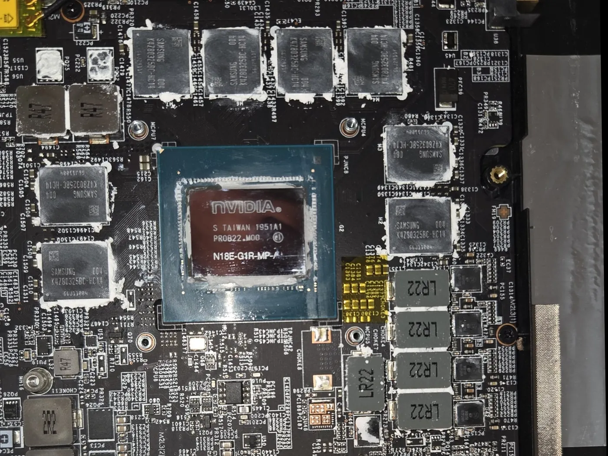
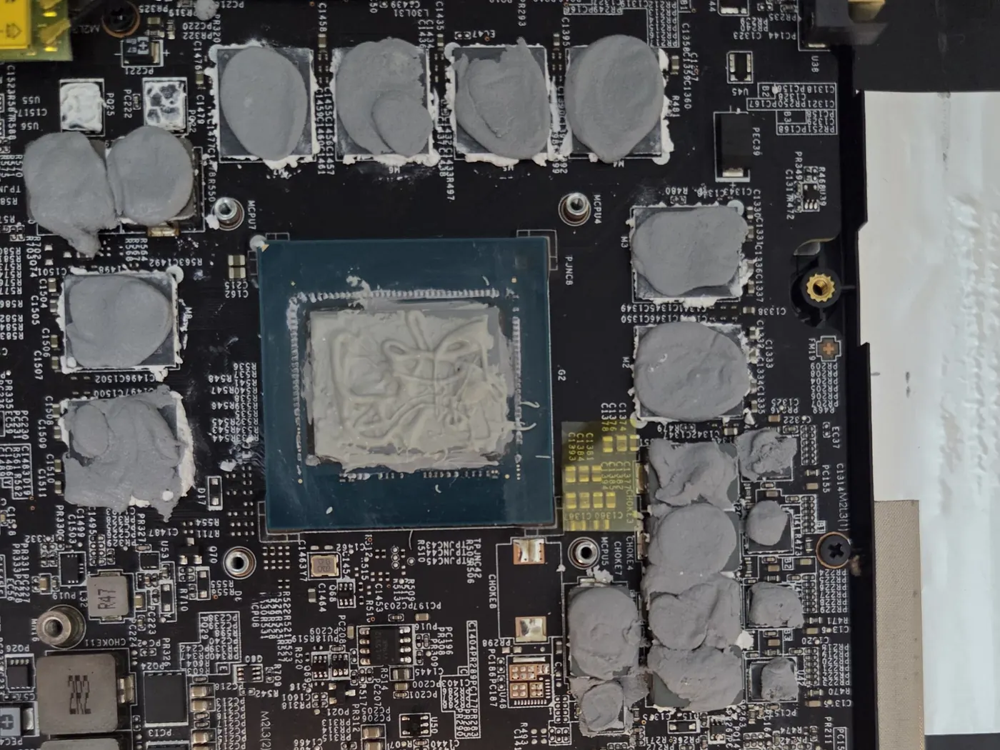
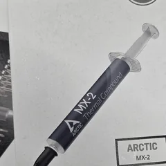
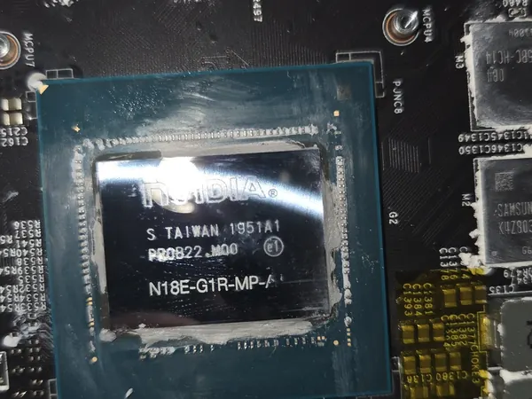

Hardware · Wartung · DiagnoseHardware · maintenance · diagnostics
Laptop-Wartung: MSI GE75 RaiderLaptop service: MSI GE75 Raider
Mein Gaming-Laptop ist rund sechs Jahre alt. Ich habe ihn selbst geöffnet, die ausgetrocknete Wärmeleitpaste und die alte Wärmeleitmasse von Prozessor, Grafikchip (RTX 2070), Grafikspeicher und Spannungswandlern entfernt, Staub mit Druckgas herausgeblasen und alles neu aufgetragen. Das Ziel: weniger Hitze, weniger Lärm. My gaming laptop is about six years old. I opened it myself, removed the dried-out thermal paste and the old thermal putty from the CPU, the graphics chip (RTX 2070), the video memory and the voltage regulators, blew out the dust with compressed gas and applied everything new. The goal: less heat, less noise.
- Öffnen, Akku abklemmen, Kühler abschraubenOpen it, disconnect the battery, unscrew the cooler
- Alte Paste und Masse entfernenRemove old paste and putty
- Chips und Kühlkörper reinigenClean the chips and the heatsink
- Neue Paste und PuttyNew paste and putty
- Zusammenbauen und testenReassemble and test

Arctic MX-2Paste für CPU & GPUpaste for CPU & GPU- TG Putty Profür Speicher & Wandlerfor VRAM & VRMs
- DruckgasCompressed gasgegen Staub im Kühlerfor dust in the cooler

Danach habe ich weiter geprüftThen I kept checking
- Akku-Report mit
powercfg /batteryreportausgewertet: noch rund 68 % der ursprünglichen KapazitätRead the battery report frompowercfg /batteryreport: about 68% of the original capacity left - Passende Ersatzlüfter über die Teilenummern im Service-Handbuch bestimmtFound matching replacement fans by their part numbers in the service manual
- Prozessortakt untersucht: Turbo Boost, Speed Shift und C-States im BIOS geprüftLooked into CPU clock behaviour: checked Turbo Boost, Speed Shift and C-states in the BIOS